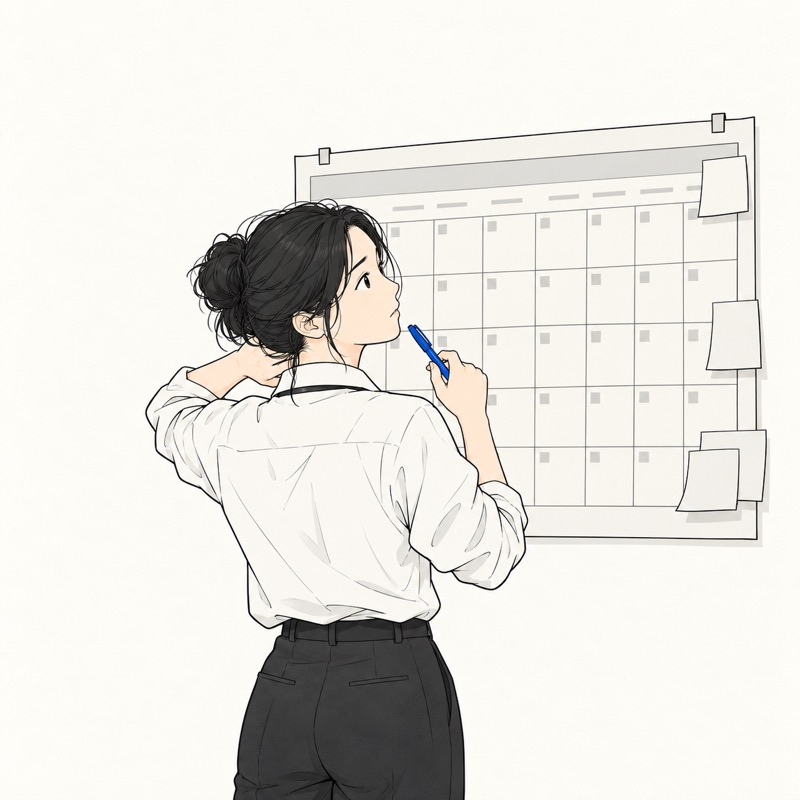
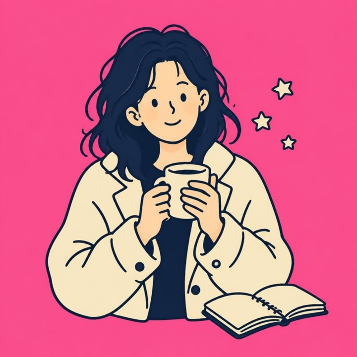
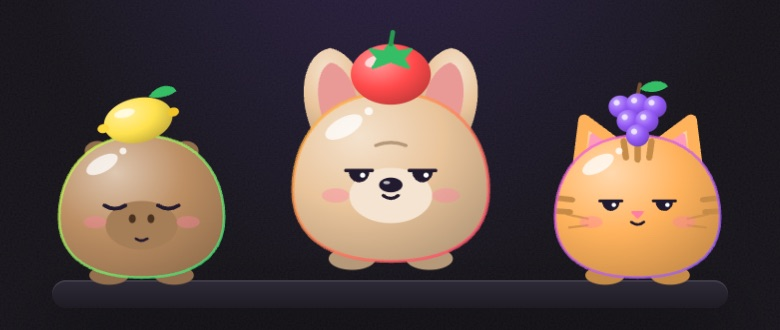

THINKING PLAYGROUND
用玩的，想清楚一點。挑一個今天想玩的遊戲。
12 題，當場告訴你卡在哪一型：看不清現在、方向還沒定、卡在第一步、怕選錯，還是目前走得很順。
開始測 →
打一句最近卡住的事，馬上改寫成 5 個今天就能動手的問題。
去改寫 →想找人聊聊卻不知道怎麼開口？選對象和話題，拿到不尷尬的邀約訊息、6 個好問題和聊完筆記。
去準備 →
今天卡在哪裡？選一類，抽一張卡：一個題目、一個小解法、一句名言。抽到喜歡的收進卡冊，也能送給朋友。
去抽卡 →
下班後還在想「這樣下去好嗎」？回答 10 個問題，扭蛋機會轉出一隻跟你很像的守護獸，說出你心裡知道、卻一直沒說出口的事。
即將開放